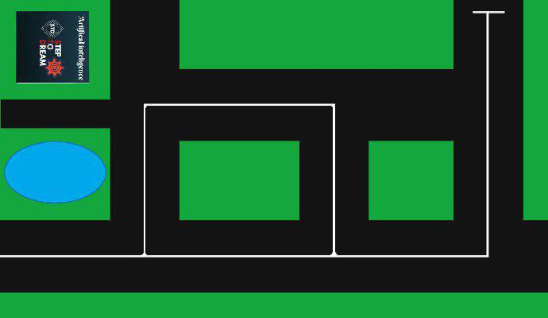

Volodymyr Shalavylo
The capitan of STD project . Was responsible for creating algorithm of robot and also was engaged in technical part.
Hi, we're team of Step to Dream and we're working on
a robot on platform of Arduino Uno R3.
Our goal was to create a robot , which would be able to overcome some obstacles in cyties. Now we managet to do it and can introduce you our Sykhiv Explorer. It is equipted with two sensors : ultrasound and colour sensors. Also robot has 2 standart wheels and 1 sphere wheel . We created such algorytm which gives robot the ability to find safe and correct way to get from one point to another.
The purpose of our project is to create our own first robot , which will be able to get from one place to another . We hope that working on this project we will get unforgetible experience and emotions and olso will improve our programing and teamwork skills. Because such creative tasks give us a lot of useful information , which will come in hand it the future.
While working on project we also had to designe map, emblem of our team and web site.
Map is the imitation of city , where robot should find the fasters way to get from A from B.
The capitan of STD project . Was responsible for creating algorithm of robot and also was engaged in technical part.
Was responsible for creating website and was engaged in technical part.
Co-author of a map of the project and was engaged in technical part.
Co-author of a map of the project . Was responsible for media and translation part . also was engaged in technical part.
was engaged in technical part .